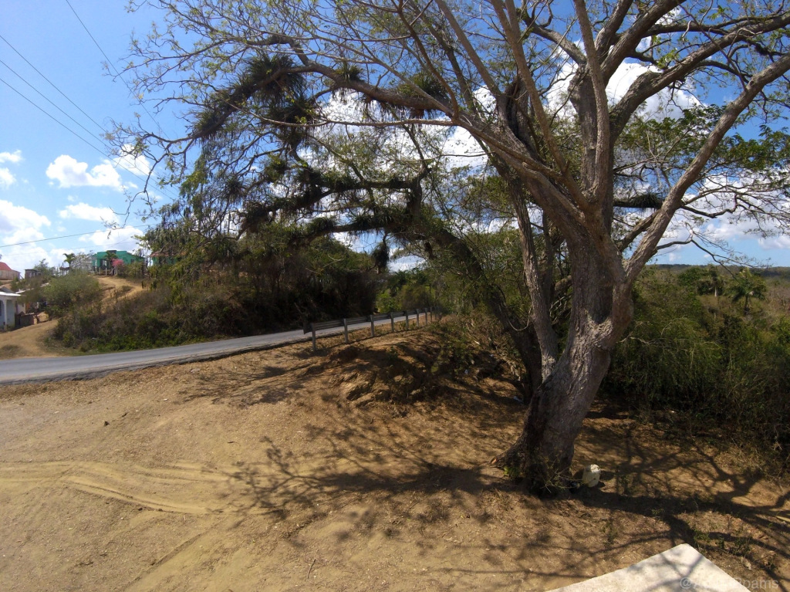
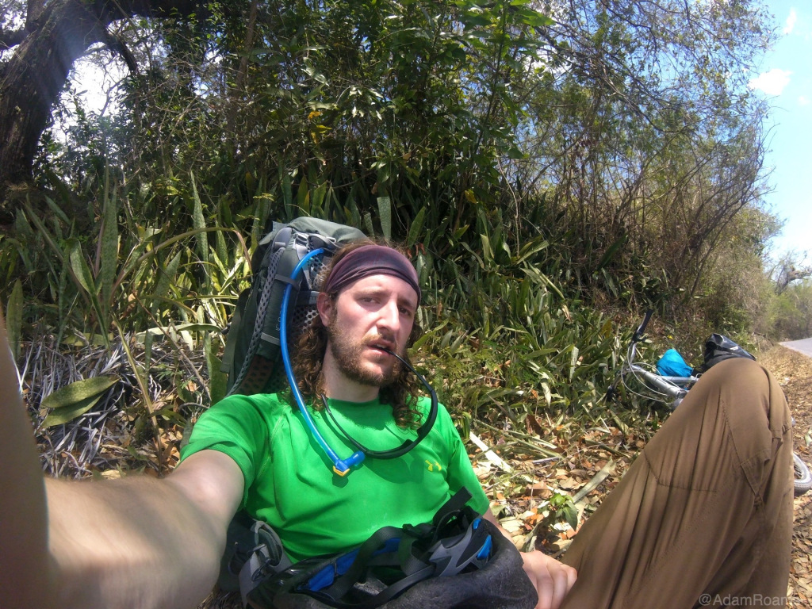
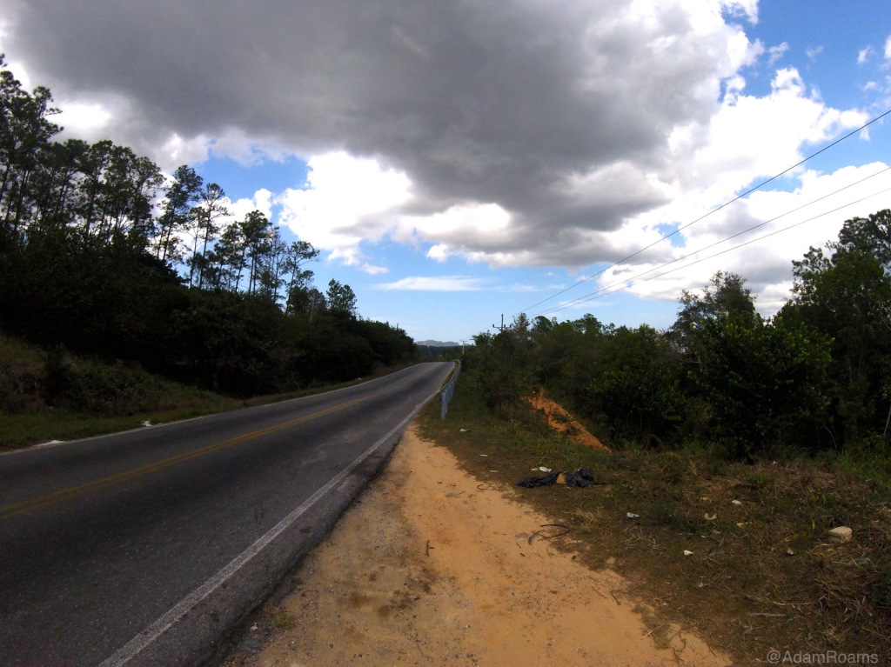
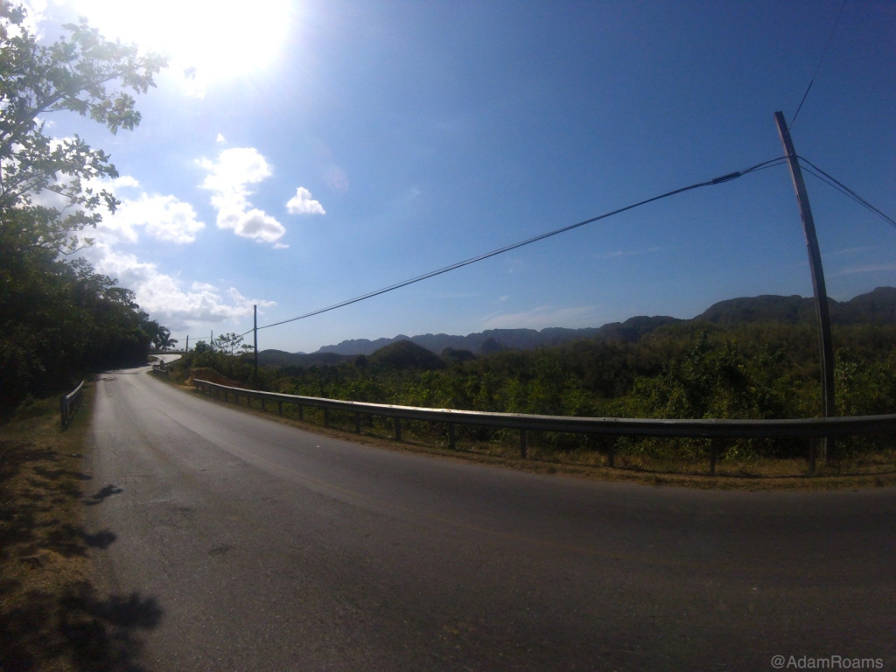
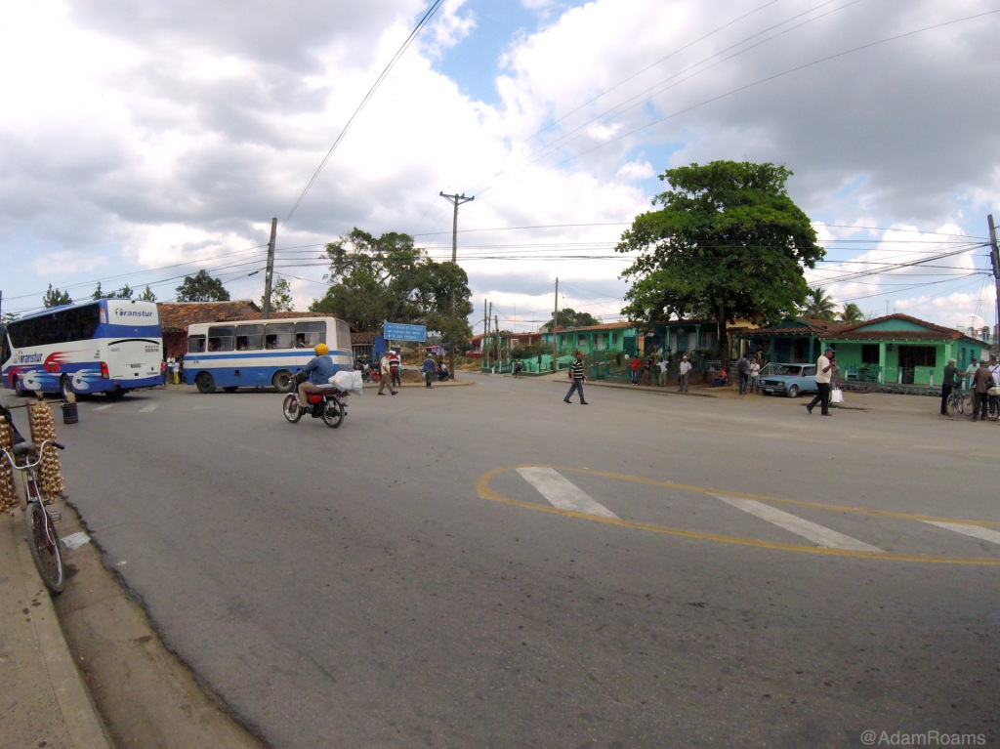
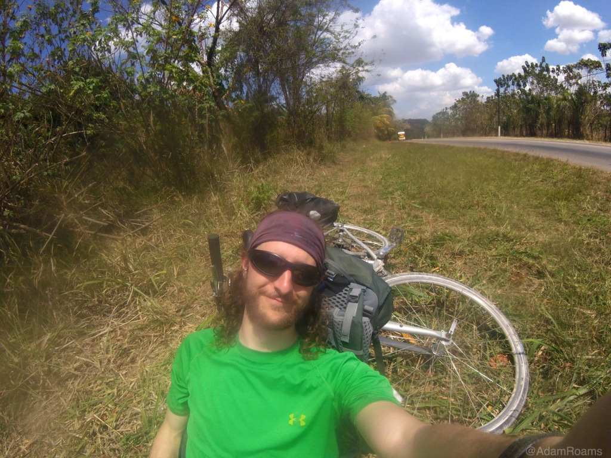

The Road to Viñales - A Tale of Cycling in Cuba - Part 3

Author’s Note: This story was written on a blog that I began along with my travels a few years ago. The trip greatly fueled my desire to travel which eventually led to living as an expat. For both sentimental and archival purposes, I decided to include this story as the first set of posts on my new site. I hope you enjoy it. 🙂
The Mountain of Madness - Crossing Thresholds
At first I didn’t realize it was a mountain. All I knew was that I had ridden out past the edge of a small town to a place where the road suddenly changed. It curved back and forth, meandering upward through forested hills, becoming steeper and more narrow as I rode on. Time passed, and the shoulders of the road disappeared. I was forced to move into the auto lane, pressing tightly against the metal barriers along its hazardous edge.
Unlike in Havana or on the autopista, the drivers here did not take much care to avoid me, as if the possibility of a collision wasn’t even a passing concern. When two cars met at my location, neither would pause to let the other pass and then drive safely around me. Even lone passing vehicles would drive dangerously close without slowing down, the worst offenders being the massive TransTur buses that bore down on me from the rear and often compelled me to pause and regain my composure after their passing.
It wasn’t long before I ceased riding and had to push my bike up the road. The last day and a half of motion had left me exhausted, and my legs were losing this uphill battle. I wasn’t sure how high I had climbed by then or when I would be headed back down into the valley. My view out from the hillside was obscured by tall brush, and the path forward always disappeared mysteriously around the next bend. I continued to believe that I would find salvation around every tight-packed turn, but I was always disappointed. After more than an hour I was still going up.
The afternoon heat grew more intense as the naked sun endeavored to burn away any remaining shade along the road. A quiet enveloped me, and all I could hear were the sounds of my own desperate hike - heavy breathing, the light shuffle of clothing with every step forward, the smack of shoe rubber on road, and the continuous click of my bike’s rear wheel spinning against its motionless gears. When I stopped to rest, that quiet became silence.
Sitting beside the road, I closed my eyes and listened to the nothing around me. The stretch of grass I had found was just wide enough to sit facing the pavement with my legs crossed and to lay my bike beside me. Perhaps on any other day this would have been a peaceful place to kick back and contemplate life’s many joys, but now all I could think about was the fact that I was clearly climbing a mountain where I had not expected there to be one.
Doubt quickly followed this admission. Did I have enough strength left to cross this mountain? Should I have hitched a ride in the last town? Why am I here on my own? Should I have even come on this trip? It had smacked of hubris to believe that I could wake up one day and suddenly ride 130 miles alone across unknown territory, particularly since my longest single ride before this had been a mere 12 miles over flat land! I had done passably well on the highway, but I certainly hadn’t been prepared to ride over a mountain. I hadn’t been prepared for any part of this journey, and if I didn’t make it to Viñales before nightfall I would be in big trouble.
I sat wasting away in the sun, barely absorbing the rusty blue taxi that passed by only a few feet in front of my face. My muscles ached, and yet a numbness enveloped me as if my brain couldn’t decide whether or not to feel the pain coursing through my body. I felt like giving up. I felt like I was done.
Somewhere inside I knew that was wrong, even stupid to consider, and I did what I could to turn to more practical thoughts. I had already ridden so far from Havana - how could I not finish this ride? How could I even consider stopping now? It occurred to me that dealing with failure here would be much more difficult than the challenge of completing my journey, and I knew that making it to Viñales was more than an imperative. I had to finish. I couldn’t consider the alternative.
Unfortunately, my body wasn’t on the same page as my determination. I was already panting just from standing and picking up my bike, and I realized how much the rest of this hike was going to hurt. Breaking the silence once more, I began walking forward. Step by step, foot by foot, I was making progress again, little bits at a time, stopping often to fall to the side of the road only to have to begin again minutes later. At each rest, the same thoughts burned themselves into my waning consciousness.
I wasn’t prepared for this.
I have to keep going anyway.
Forward. And up. And forward. Always forward. The rhythm of my motion took over, and I felt as though I no longer had any real control over my body. It was walking on its own, a mechanical corpse driven by the most basic need to survive, always moving to the next point of rest whether I liked it or not. Whatever pain I felt had been eclipsed by a sheer longing for motion, and it drove me forward under the heat of the Cuban sun. I couldn’t complain - I was tired, but I was moving. At least 2 hours passed with me in that state.
Then suddenly I reached the crest of the mountain. I stopped to let that soak in.
The discovery of my success was like a shot of adrenaline straight to my heart. I shouted triumphantly into the sky. I took my pack off and danced around in the dirt. I laughed at this mountain road and all of the sweat, pain, and misery I had suffered during my crossing. This new energy faded quickly, but the ecstasy of the moment stayed to lift my spirits for the remainder of the ride. It wasn’t over just yet.
I still had to make it to Viñales, but now I could enjoy my ride downhill!
Finding a Home in Viñales
Helmet on and packs tight, I mounted my metal steed for the final descent. From the top of the path I could see a long, beautiful stretch of road heading downward in front of me. It was calling to me, inviting me to let go of the last 3 hours of misery and to move once again with great swiftness. I stepped onto my pedals and cycled forward into an empty lane. I quickly picked up speed and smiled as the wind danced happily against my cheeks, my body arched forward in anticipation of my race to the bottom of this mountain.
The weight of my luggage propelled me forward with a momentum I had not anticipated, and I realized I would have to be careful not to wipe out on sharper turns. A little braking here, a slowdown there… I had everything under control. But still, I was flying! I had such an awesome ride on that beautifully smooth road and a wonderful view all the way down. But nothing was so amazing as seeing the Valle de Viñales for the first time as I rounded a corner near the bottom.
The mountains I saw were wide and steady, as though they had calmly rolled out of the ground to become the backbone of Western Cuba, and a dense green forest covered everything for miles, from the low valley floor all the way to the tops of those gentle giants. This breathtaking environment was why I had come, and suddenly everything I had gone through to get here… it was all okay.
I rode into Viñales in the late afternoon with a triumphant smile spread wide across my face. I had done it! In less than 2 days riding solo across the countryside of Cuba, I had successfully completed a 130 mile bicycle tour from Havana to Viñales! Swelling with pride, I rolled into town and searched for the parade that would greet me upon my victory.
Of course, there was no parade. No one but me could be excited about what I had accomplished, in part because no one else even knew. To the locals, I was simply another tourist wandering into a town that already had plenty of them, and they went about their lives without thinking twice about my presence. But I knew what I had done, and I cheered quietly to myself on the way into town.
That sort of anticlimactic moment can be a disheartening part of traveling alone, but at the same time I knew that what I achieved on my first cross country ride had come solely by my own efforts. I had learned so much about my capabilities in the previous few days, and I’d had a great time on my ride.
What other people called a ‘crazy’ idea had instead been an amazing adventure, a journey into unexplored physical and mental spaces within myself that would culminate in an experience unlike anything I’d ever known. And if being crazy is having an unquenchable desire to explore new territories, to seek challenges beyond the limits of my known abilities, and to charge relentlessly forward in the face of overwhelming doubt and fear - then yeah. I’m absolutely nuts.
